Xander, 7 yo, came from SC to work with Don for a week, 9-13 August 2010
This file and is a work in progress.
Xander's Mom sent an email to Don in Dec. of '09 to find out about a program that he could be challenged by. He is being homschooled. She purchased Don's 2 disk set Calculus For Young People, with all his materials. After talking with Don, his parents decided his Dad would bring Xander to Champaign, IL to work with him for a week. Don worked with Xander (and his Dad), from 9-11 am each day, and another 2 hr. session, Wed. afternoon, to get the 12 individual hours that was contracted for.
On Monday afternoon, Don sent this email (later he added scans of Xander's work)Hi Victoria and Geoffrey,
I just wanted you to know that I think Xander did very well this morning. I really enjoyed working with him.2. Don checked to see if he knew what squaring 5 meant (he did) and what 4-5=?He said 1; then Don gave him 5-4=? he said 1 and then he said 4-5= -1. Don gave him quadratic equations like x2-5x+6=0, by guessing (he guessed 3 (that worked) and then 2 (and that worked!), then seeing the sum and product of the roots, gave 5 and 6 in the equation. He was able to get the 2 answers to 3 other quadratic equations. He was stuck on x2-25x+24=0 and we talked about the factors of 24 until he realized that 1x 24=24 and said the 2 answers were 1 and 24.
3. The rule for substitution: in one equation, the same number has to go into the same variables (if you put a 3 in for x somewhere, you must put a 3 in for every x in the same equation)
4. Made up a quadratic equation for Don (that worked) and for Dad and Mom (that didn't work- but he fixed those).
5. Squaring #,s that end in 5, like 65^2= 4225 in his head, and checked these on a calculator. Don did this because Xander wanted to check 4 1/2 in the quadratic
x2 - 6 1/2x+9=0. So Don saw a way to get him to do (4 1/2)2 or 4.52 . If 452=2025, then 4.52=20.25. This made the computation simpler!
6. At a break outside, Geoffrey lifted Xander up and he helped Don put birdseed in the bird feeder.
7. Don showed Xander how to multiply 25 times a number divisible by 4 in his head: ex. 24x25= 24x100/4 = (24/4)x100=600
8. Xander borrowed the peg game and the 6-piece burr puzzle overnight.
9. As Xander worked, Don showed Geoffrey IES applets (a great place to see lots of good things), that Don was responsible for them making:
9a. Maggie's difference of 2 cubes
9b. The six trig functions in one picture, from which the basic trig identities emerge!
9c. i^i^i... from Chapter 11 that they saw in Don's WS book
9d. Changing Shapes With Matrices from Don's book of that name and IES allowed him to keep on his website.
Two other applets are:
pplet done by Lori and Don - you need to download free, geogebra
Area of triangle= limit of infinite series, applet done by Lori and Don - you need to download free, geogebra
Geoffrey was also shown how to use Don's A Map to Calculus , looking at how Alex sees an infinite series, Don's area under curves by plotting points on a calculator and Ian's (Ph.D. in math U of Chicago) using ratios and differences of powers of powers to get E. Don also told Geoffrey about his first student, Jonathan a 7 yo, who came from afar (CT) to study with him for a week in 2 summers, now a Ph.D. candidate in Physics at Cornell. Don also showed Geoffrey a picture of Kirsten, getting married this month and is in one of Don's videoclips doing infinite series at age 7, which Geoffry has seen on youtube, also on his website under Infinite Series. They talked about getting Xander a calculator and Mathematica. Don also recommends DPGraph for 3D graphing- powerful, easy to use and inexpensive.
10. It was interesting how Geoffrey described his school math experiences..he was always bored in math classes, he never did any homework, was told he couldn't do well on the AP Calc test..he got a 5, the highest possible score! Two things here: 1 children don't have to write down how they do things to understand them and 2. people should not worry about making mistakes. Don finds his brightest students make more mistakes, then hone in on the answer and get it right.Geoffrey and Don talked about doing math by email with Xander after he leaves here. That would be great!
Thank you Vickey, Geoffrey and Xander for a fine morning!
Don
Xander had started the work in chapter 1 Infinite Series at home before he came to Don. He knew 1/2+1/4+... goes to 1 or 1/1 and 1/3 + 1/9 + 1/27 ... goes to 1/2
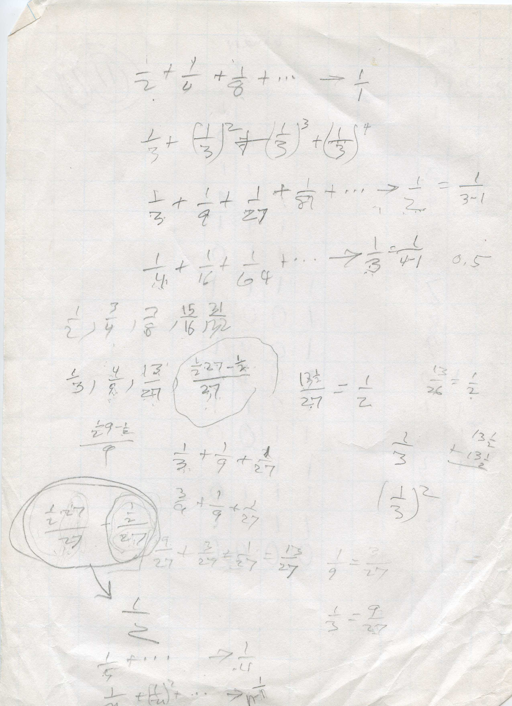
Xander ended up with generalizing 1/n + (1/n)2 + (1/n)3 + (1/n)4 + ...-> 1/n-1.Don then gave him 2/5 + (2/5)2 + (2/5)3 + ... which he worked on below:
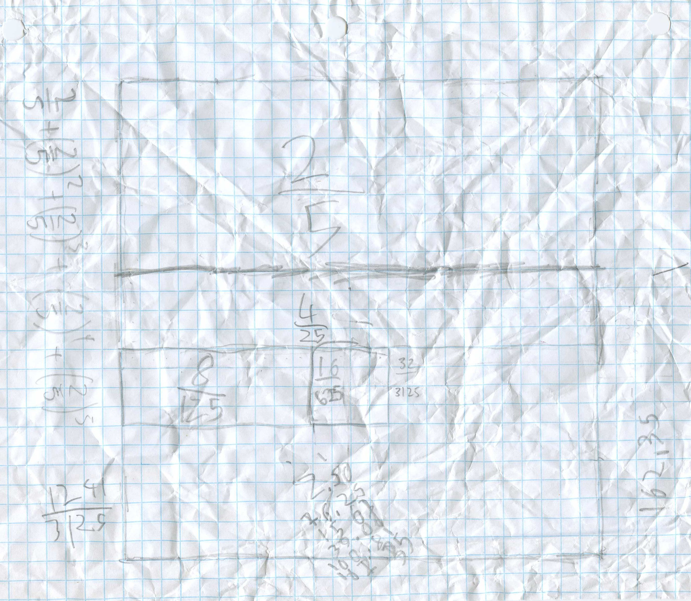
He found the pieces, and found the sum of the 1st 5 terms to be 0.65984.
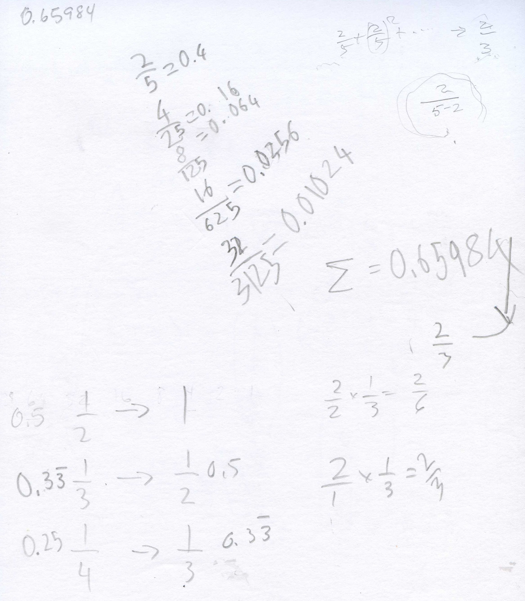
His Dad worked with him overnight to see 0.65984 is getting close to 2/3 = 0.666... So 2/5+... goes to 2/3. Don asked him where the 2 and the 3 come from and he saw the 2 came from the top and the 3 came from 5-2. When Don gave him 7/12 + + (7/12)2 + (7/12)3 + ... he knew that would go to 7/(12-7)= 7/5 and wrote this as a mixed number and decimal!
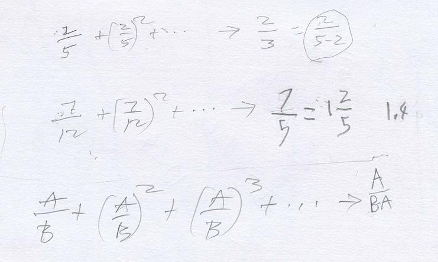
He generalized to A/B + (A/B)2 + (A/B)3 + ... -> A/(B-A) !!!
In between all of this fine work he and Don would play NIM, he would try to make the 3x3x3 cube from the 7 Soma pieces, play with The Tower Puzzle, and the Peg game.
Then Don showed him the Guess my number game with the cards:
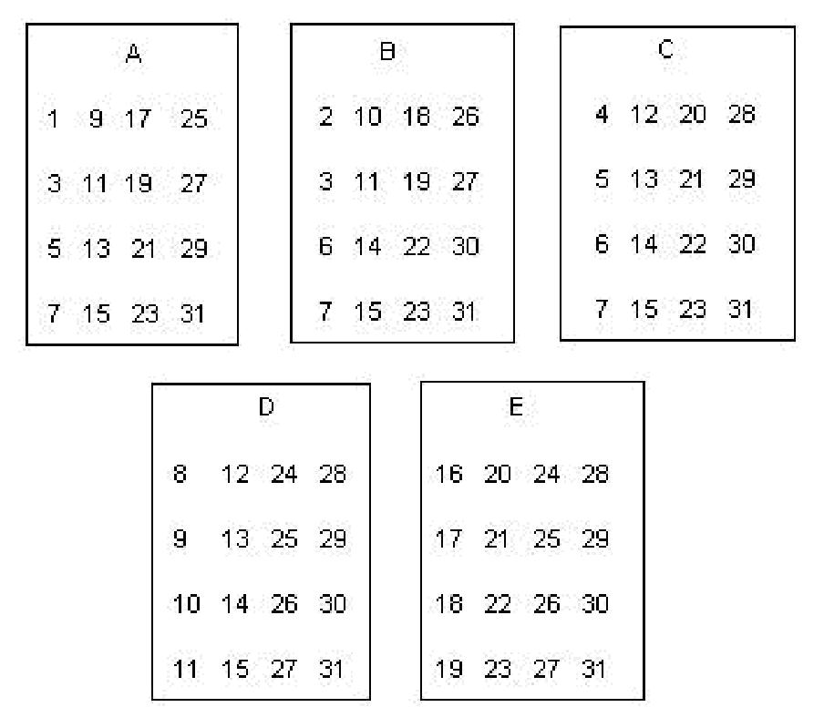
Don had Xander make these numbers on 3"x5" cards. As the leader, you say "Pick a whole number from 1 to 31, no fractions, and don't tell me what it is. I will tell you your number. Is your number on card A? Is your number on card B? " and so on through card E. If the person says their number is on cards A, B and D, for example, you add the numbers in the upper left hand corner of those cards A, B and D, or 1 + 2 + 8 = 11 which is the person's number! Now try this on your friends, parents and teachers!
Don wanted Xander to figure out why this game worked, so he worked with Xander on counting in binary (base 2, compared to base 10, our decimal system). Don set up the charts for decimal counting and binary counting. The place-values in decimal are ..1000, 100, 10, 1,.., while in binary the place-values are ..16, 8, 4, 2, 1,.... Don made marks on the right below and wrote in decimal 1, 2. 3.. and in binary 1, 10 (one group of 2), 11, (one group of 2 and 1 more and so on. Xander picked up on this quickly.
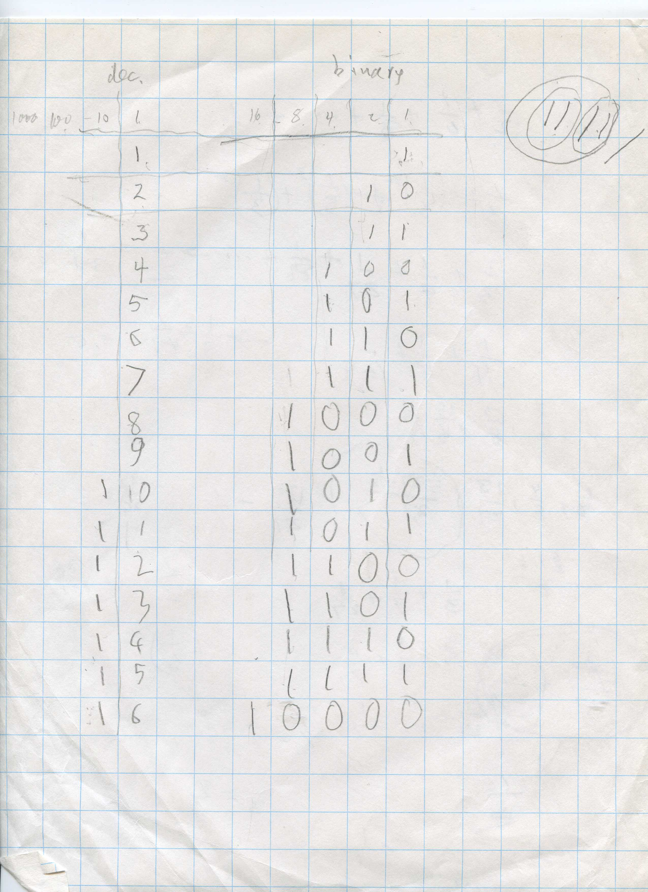
Notice that if you look down the ones column in binary, the numbers alternate 1,0,1,0,1,0.. Which decimal numbers have a 1 in the ones place in binary? They are 1, 3, 5, 7, 9, 11, .. the odd numbers to 31. These are the numbers on card A! Which decimal numbers have a 1 in the 2's place in binary? 2,3, 6,7, 10,11, 15,16.. These numbers are on card B! And so on. Complete the rest.
If the person who picks the number, says their number is on cards A, B, C, and E, the leader adds the number in the upper left corner of those cards 1+2+4+16=23 and announces their number is 23!
Cookie-sharing -using 3x5" cards (NOT circles, too hard), and scissors
Share 3 cookies between 2 people: Xander quickly got 1 1/2 cookies for each person.
He ignored Share 6 cookies between 7 people, so Don gave him shae 2 cookies between 3 people.
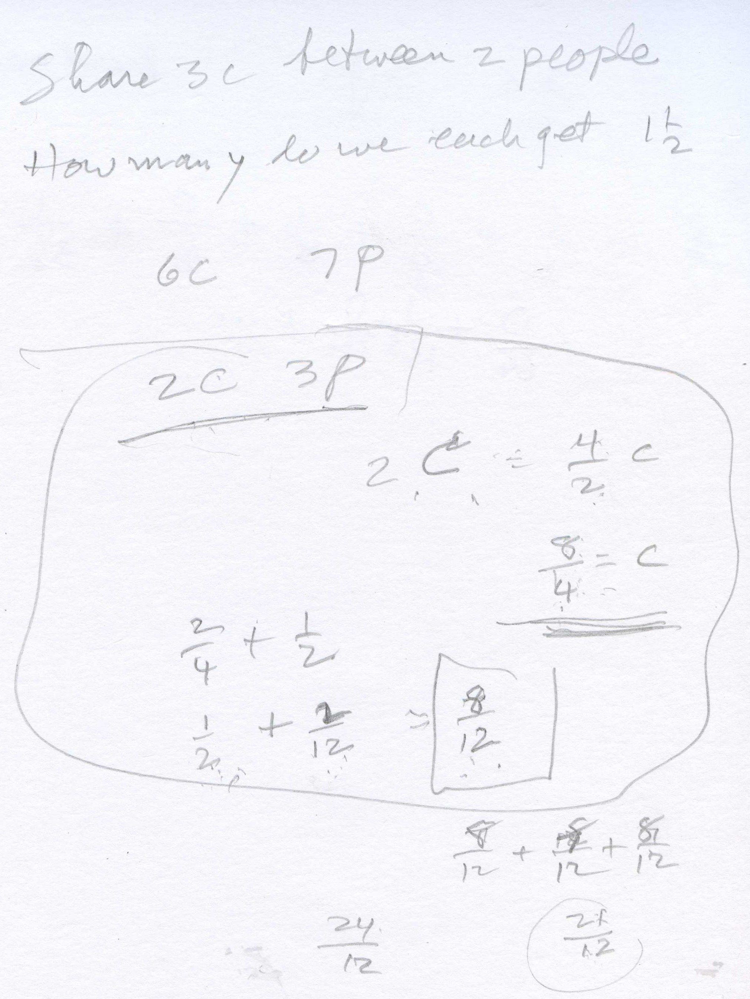
Xander cut the 2 cookies into 2 pieces, then 4 pieces. He had 8 pieces, each 1/4 of a cookie. He shared 2/4 with each of the 3 people. Then each person had 2/4 or 1/2 of a cookie and there were 2- quarters left over. Then he cut each quarter into 3 pieces. Don immediately asked Xander what the nane of each of these 6 pieces. How many of each of these pieces make a whole cookie? Well 3 make a fourth, and 4-fourths make the whole cookie, so 12 of each make the whole cookie. So each piece is 1/12 of a cookie, he said. So each person gets 1/2 + 2/12 = 6/12 + 2/12 = 8/12 of a cookie = 2/3 of a cookie.
Don then asked Xander if he could use Brad's method to share the 2 cookies between 3 people again, only now he is cut to into 2 pieces, share, then cut into 2 pieces. While Xander cut and named the pieces, Don wrote down the size of the piece each person got:
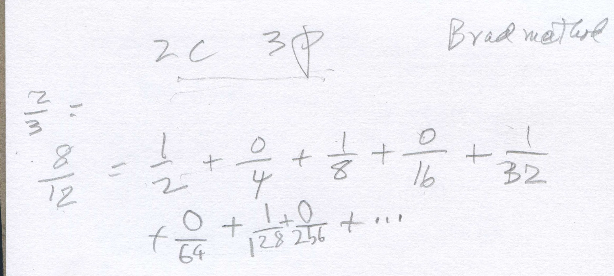
And the infinite series was another name for 8/12 or 2/3.
Fine job, Xander!
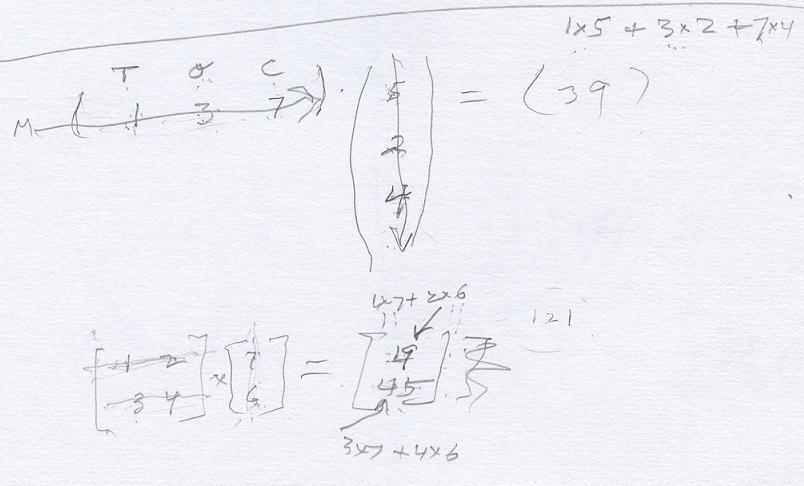
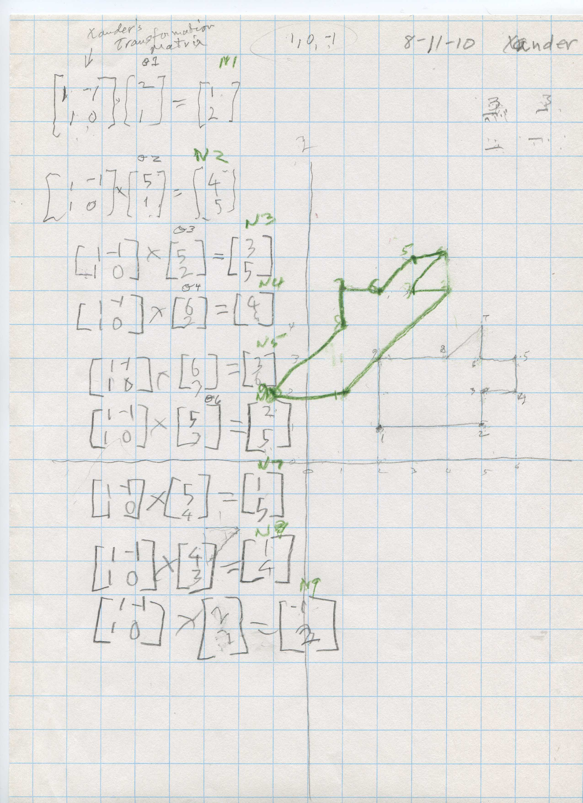
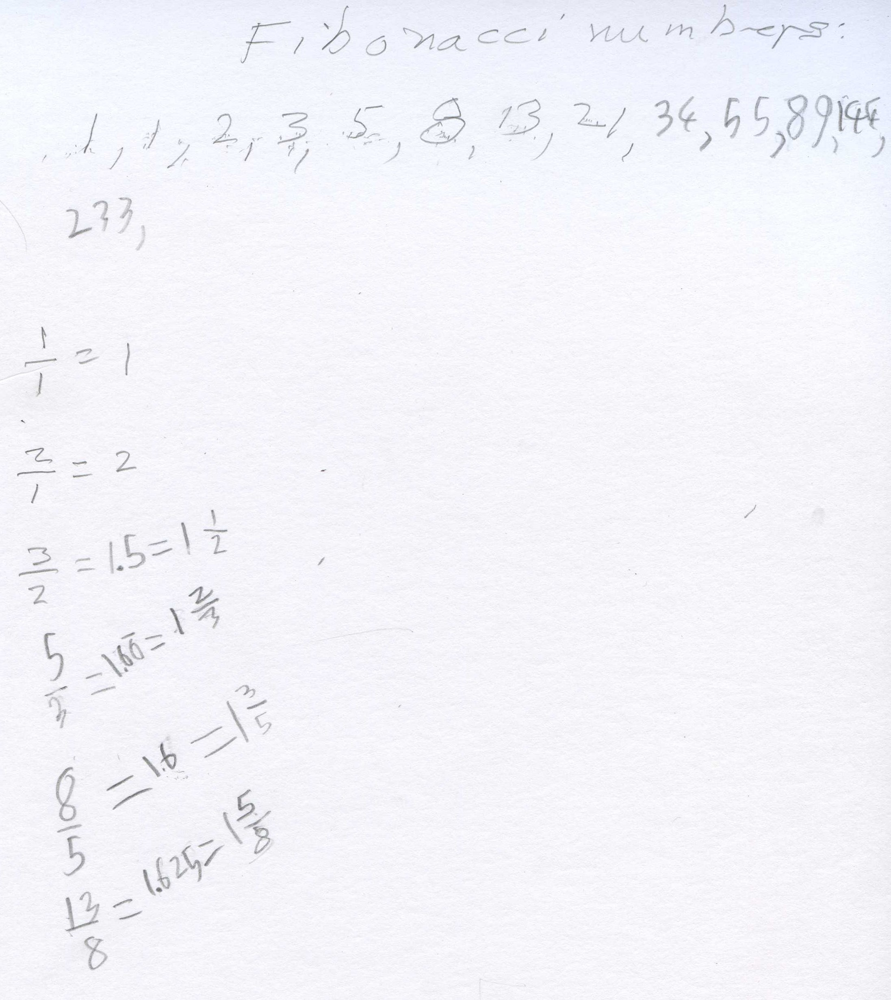
Lots more coming!